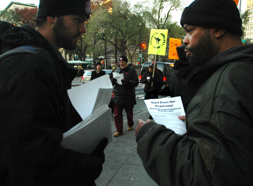
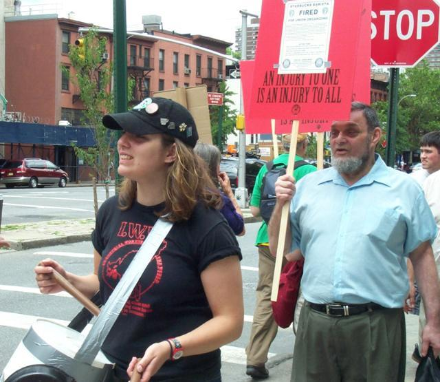

Submitted on Wed, 11/30/2005 - 5:38am
Walkout by employees at 10 stores linked to employee exploitation by fast food chains around the world 
Auckland - Workers at Starbucks shops across Auckland have walked off the job in the world’s first strike against the global coffee chain.
What began as a small protest at one store became a city-wide strike when Starbucks workers learned that managers were being brought in to cover the shifts of striking workers.
Simon Oosterman of
supersizemypay.com, the campaign coordinator, said Starbucks' handling of the situation managed to turn an event highlighting "the poor conditions of low pay and minimum wage workers" at one location into "a show of solidarity and strength" by employees across the city.
Submitted on Sun, 11/27/2005 - 5:40am
BY DEBORAH S. MORRIS, STAFF WRITER - New York Newsday, November 26, 2005, 6:55 PM EST
 Russ Allen considers himself a Starbucks fan, buying a cup o' joe every day from the ubiquitous coffee haven. He also considers himself a smart businessman.
So, true to form, he wasn't taking sides Saturday on whether or not Starbucks workers should unionize. Instead, he looked at it as an opportunity to watch free enterprise in action.
Submitted on Sat, 11/26/2005 - 4:24pm
By ANTHONY RAMIREZ - New York Times, Published: November 26, 2005
The conflict between the Starbucks coffee chain and workers wanting to form a citywide union played out on two fronts yesterday: organizers formed a picket line in front of a local Starbucks, and a hearing was announced for next year before the National Labor Relations Board.
Chanting, "No latte, no peace," as a union organizer dressed as a giant latte rocked back and forth, about 20 demonstrators picketed a Starbucks at Union Square.
They urged a guarantee of a 30-hour work week, to ensure that workers would qualify for health benefits, and they demanded an end to what they called union busting by Starbucks.
So far, the union, the Industrial Workers of the World, has organized three Starbucks coffee shops in New York City. Starbucks has more than 200 outlets within 10 miles of downtown Manhattan, and nearly 6,900 in the United States.
The labor relations board, the agency that oversees workers' right to bargain collectively, said a hearing has been scheduled for Feb. 7 in Manhattan. At that session, union organizers and Starbucks officials will appear before an administrative law judge for a review of the union's allegations about the chain's practices.
Submitted on Sat, 11/26/2005 - 3:36pm
The union, not identified in this article, was the IWW. Details on this campaugn are available here: http://www.iww.org/unions/iu660/realfood/
By Ryan Kim - San Francisco Chronicle, November 26, 2005.
An administrative law judge with the National Labor Relations Board has ruled in favor of 31 employees of a San Francisco organic grocery store who were fired after they began union organizing efforts.
Judge James Kennedy ruled last week that Fresh Organics Inc. and its parent company, Nutraceutical International Corp., violated the law when they closed the Noe Valley Real Foods store in San Francisco in 2003 and fired all of its employees.
The company had argued that the closing was part of a planned remodeling, but Kennedy concluded the move was intended to discourage the workers from organizing a union.
Kennedy said in his ruling that there were "a number of facts which appear, on their face at least, to suggest that (the store's) closure was motivated by antiunion factors rather than due to a neutral business decision."
Submitted on Sat, 11/26/2005 - 1:46am
Massive Labor Board Complaint Implicates Top Managers - November 25, 2005.
New York, NY- The National Labor Relations Board has charged 15 Starbucks officials with an extensive array of anti-union acts including the discharge of two baristas for organizing activity. The multi-count complaint, detailing unlawful activity at three Starbucks stores, comes after an independent investigation of the world's largest coffee chain triggered by charges from the IWW Starbucks Workers Union.
The NLRB complaint alleges that Starbucks fired union member Sarah Bender to discourage employees from engaging in protected union activity. The complaint further alleges that the company surveilled, interrogated, and discriminated against union member Charles "Anthony" Polanco. Then Starbucks, contrary to past practice and policy, refused to allow Mr. Polanco to revoke his stress-induced resignation before it became effective.
"Yes, the 'happiest company on Earth' dismisses people for exercising their right to form a union," remarked Sarah Bender. "I'm now just looking forward to getting my job back to continue the organizing drive."